⛔ O que faz este card diferente do #8079: a marca está espalhada
No CITNET a marca vive em um web.KOVR.config mais 3 RDLCs. No CITWEB, medi
origin/hml e o HML da KOVR:
| Camada | Quantos lugares | Estado medido em 11/08 |
|---|---|---|
Nome (EmpresaNomeFantasia) | 13 arquivos
Web.KOVR.config, um por módulo |
todos com value="KOVR Seguradora" |
Logo dos relatórios (logoKOVR.png) |
11 módulos servem o arquivo | todos com o mesmo md5 bf1e18760f… · 2.214 B · PNG 102×60
( DadosApolice = 404) |
| Logo do menu/erro | helper com switch |
KOVR não está no switch → serve
logonstech.png (3.169 B · md5 3740b998b9…) |
| Nome no banco | tb_cad_seg.n_seg |
já é KEV SEGUROS S.A. — o “antes” está contaminado |
A consequência prática é que amostrar não serve. Um CT que confira “o logo mudou” num módulo passa mesmo se 10 módulos ficarem para trás. Por isso o CT-MKW-001 e o CT-MKW-005 medem todos os lugares, e o logo é conferido por md5 — que é o que distingue “trocou” de “é cache do navegador”.
⚠️ O menu interno não exibe o logo da KOVR hoje — e isso muda a estimativa se Produtos quiser
CITHelper.RetornaLogotipo() (usado em Views/Menu/Index.cshtml e
Views/Error/Error.cshtml) só trata AXA e STG; todo o resto
cai em logonstech.png. Já a variante de relatório,
RetornaLogotipoRelatorio(), é dinâmica e resolve logoKOVR.png
sem exceção.
Ou seja: trocar o asset resolve os relatórios e não resolve o header. Se o CA (“todos os locais citados”) inclui o menu, o fix precisa acrescentar KOVR ao switch — mudança de código, não troca de arquivo. O CT-MKW-003 mede o estado atual para que essa decisão seja tomada com dado, e o veredito dele fica informativo até Produtos responder. O desenvolvimento registrou o mesmo achado no card em 11/08, de forma independente.
Dentro: logotipo e nome da seguradora no CITWEB — os 13 módulos com
Web.KOVR.config, os 11 que servem logoKOVR.png, os relatórios de
Nacional/Internacional/Gestão/Conversor, o menu interno e as telas de erro (como medição),
o segundo asset KOVR_ttici04a.png, mais a regressão do identificador técnico e
a caça-string que o card pede.
Fora, e por quê:
- CITNET — coberto pelo #8079, cujo plano já está publicado com 10 CTs. Este plano
não duplica nenhum CT de lá. ⚠️ As 4 tasks deste card são “[Impacto]” e mencionam CITNET
(a #8040 manda trocar o
LogoKOVR.pngdo CITNET); pedi definição de escopo no card e assumi, até resposta, que #8038 é a fatia CITWEB. - Login da Plataforma nsseg (
UrlLogo/Mongo) e certificado novo (DsLogoBase64/MigraDoc) — não estão no repositório CITWEB. O CT-MKW-009 documenta a fronteira em vez de ignorá-la. - Produção — o
UPDATE tb_cad_segem PRD vai por chamado de infra, e o QA não toca produção. - Renomear
Empresa=KOVR— o próprio card coloca fora do escopo por risco alto; o CT-MKW-007 protege isso em vez de testar.
1. DoD do desenvolvimento. A execução só começa com as 4 tasks fora de To Do e o card em homologação. Hoje (11/08 16:38) as quatro estão em To Do — o plano sai antes de propósito, para os achados chegarem durante a implementação.
2. Foto pré-deploy (obrigatória). Por módulo: md5 e tamanho do
logoKOVR.png e do logonstech.png servidos, o nome exibido na UI, e o
valor de tb_cad_seg.n_seg. Baseline já medido em 11/08 e registrado nos CTs. Sem essa
foto o CT-MKW-006 não distingue código de dado.
3. Massa. Precisa de apólice/averbação para gerar relatório e certificado no CITWEB da KOVR. Se não existir, o QA cria — falta de massa não bloqueia.
4. Automação. Não há script cobrindo marca no CITWEB. A comparação de md5 por módulo é trivialmente automatizável e será a base do script gerado ao final dos CTs aprovados.
Pré-condições
https://kovr-hml-faturamento.nsseg.com.br/<Módulo>/ (mesmo host do CITNET, que fica em /citnet/). Credencial: .env → HML_KOVR_ALFA_CITNET_USER / _PASS (única chave KOVR do .env; confirmar no primeiro login). ⛔ Navegação por clique desde o login.Baseline medido em 11/08:
logoKOVR.png responde HTTP 200 em 11 módulos (Login · Nacional · Internacional · Gestao · Conversor · ImportarExportar · Tabelas · Seguranca · LiberacaoCobertura · Interface · InterfaceSTREITI), todos com o mesmo md5 bf1e18760f… (2.214 bytes · PNG 102×60). DadosApolice responde 404 nesse caminho.Passos
- Para cada um dos 11 módulos, requisitar
/<Módulo>/Content/images/custom/logoKOVR.pngcom query string única (furar cache) e registrar HTTP, tamanho e md5. - Montar a tabela módulo × md5 e comparar com o baseline.
- Abrir pelo menos 3 módulos na UI (Login, Nacional, Conversor) e capturar o logo legível na tela.
- Comparar o logo exibido com o anexo oficial do card (KEV FUNDO BRANCO.jpeg).
- Registrar o estado do
DadosApolice— se passou a servir o arquivo ou segue 404.
Resultado esperado
bf1e18760f…, e o mesmo md5 entre si. ⛔ Qualquer módulo que continue com
bf1e18760f… não foi atualizado — é o achado que este CT existe para produzir. md5 em vez de inspeção visual é o que separa “trocou” de “é cache do navegador”.Resultado medido — 12/08/2026 · CITWEB KOVR HML · build V 1.0.260812.1538/.1539
Os 11 módulos servem o arquivo novo — e o arquivo é o logo da KEV. Requisitei
logoKOVR.png em cada módulo com query string única (furando cache): 11/11 HTTP 200, todos com md5
8e23fe339202 · 1.988 B · PNG 102×60 confirmado pelos magic bytes — uniforme entre módulos e
nenhum no baseline bf1e18760f (2.214 B) de 11/08. DadosApolice segue 404, como no baseline.
E o logo aparece legível — não na shell, mas onde o CITWEB o renderiza: dentro do relatório. Extraí a imagem
embutida do RESUMO-RCV e abri: lê "KEV seguros", a mesma marca do asset servido (ver CT-MKW-002).
⚠️ Achado deste CT: a tela /Login/ não exibe logo nenhum —
zero <img>, zero background-image, e o único CSS custom é nstech.css, não
KOVR.css. Servir o arquivo não é exibi-lo.
Evidências

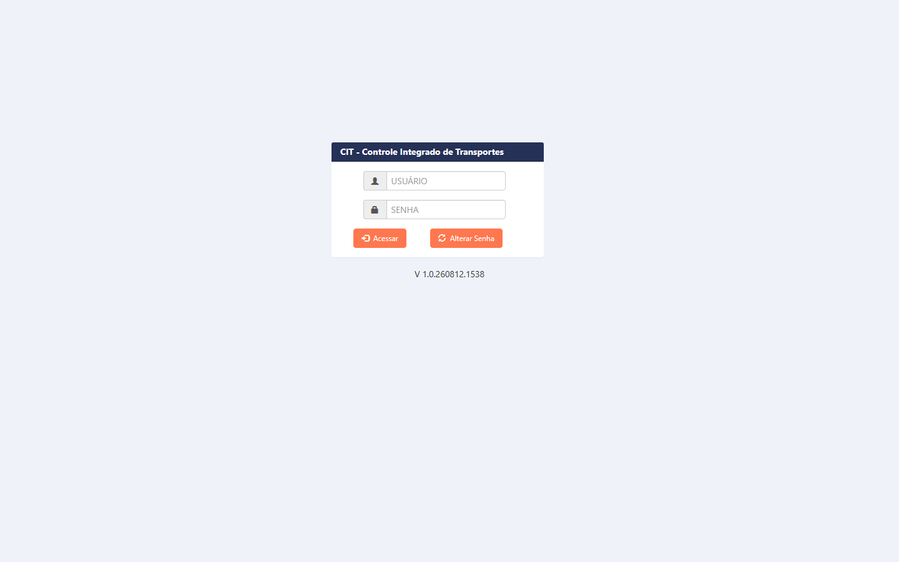
Tipo
Positivo · o CT que mede o fan-out, não uma amostra
Pré-condições
https://kovr-hml-faturamento.nsseg.com.br/<Módulo>/ (mesmo host do CITNET, que fica em /citnet/). Credencial: .env → HML_KOVR_ALFA_CITNET_USER / _PASS (única chave KOVR do .env; confirmar no primeiro login). ⛔ Navegação por clique desde o login.Medido em
origin/hml: CITHelper.RetornaLogotipoRelatorio() monta "Content/images/custom/logo" + Empresa + ".png" — sem switch, então para a KOVR resolve logoKOVR.png. É usado pelos controllers de relatório (Conversor, Gestao, CommonApplication e outros). Logo, trocar o arquivo cobre este caminho.Passos
- Menu Nacional → gerar Prévia e Relação de Embarques; salvar os arquivos gerados.
- Menu Internacional → gerar um relatório equivalente e salvar.
- Menu Gestão → gerar o relatório de Acúmulo de Risco e salvar.
- Conversor → gerar o relatório de processamento de averbações e salvar.
- Em cada arquivo, conferir o logo dentro dele — não basta a tela.
Resultado esperado
Resultado medido — 12/08/2026 · CITWEB KOVR HML · build V 1.0.260812.1538/.1539
O relatório embute o logo novo. Resumo de Embarques pela Prévia do Nacional (apólice
0000000000059/sub 001/ref 02/2026, 2.843 averbações) → RESUMO-RCV-...xlsx (14.732 B),
com xl/media/image2.jpg (2.011 B) que abre mostrando "KEV seguros".
⛔ Correção de oráculo: md5 não sobrevive a re-encode — o relatório embute JPG e o asset é PNG. A 1ª rodada do script imprimiu "0 com o logo NOVO" para um arquivo que tem o novo. Imagem embutida se confere visual e dimensionalmente, não por hash.
O relatório do Gestão (SLA Básico, 5.714 B) não embute imagem — é grade de dados e não carrega logo. Não é defeito; fica registrado para não se cobrar logo onde não há.
Evidências
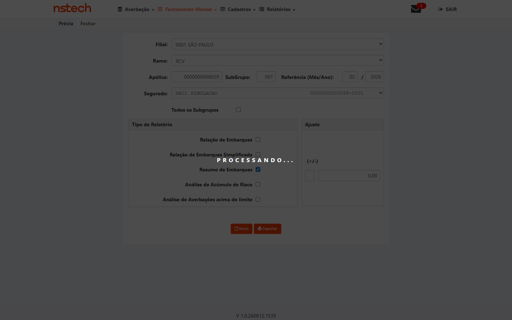
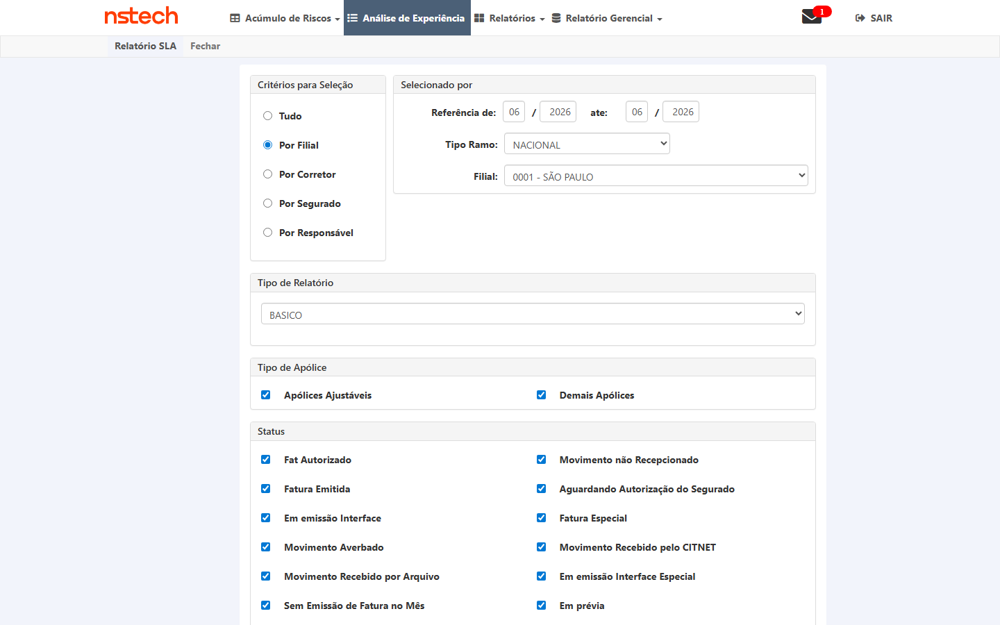
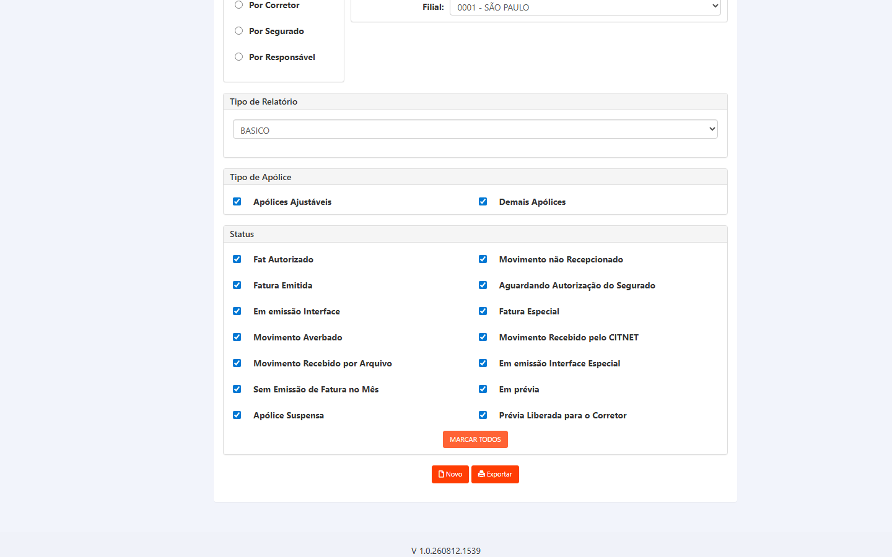
Tipo
Positivo · relatório tem o ARQUIVO como evidência obrigatória
Pré-condições
https://kovr-hml-faturamento.nsseg.com.br/<Módulo>/ (mesmo host do CITNET, que fica em /citnet/). Credencial: .env → HML_KOVR_ALFA_CITNET_USER / _PASS (única chave KOVR do .env; confirmar no primeiro login). ⛔ Navegação por clique desde o login.⛔ Este CT existe por um achado de código, não por suspeita. Medido em
origin/hml, CommonApplication/Helpers/CITHelper.cs:88:public static string RetornaLogotipo() {
switch (AppSettings["Empresa"]) {
case "AXA": case "STG":
return "Content/images/custom/logo" + Empresa + ".png";
default:
return "Content/images/custom/logonstech.png"; // ← KOVR cai aqui
} }Views/Menu/Index.cshtml e Views/Error/Error.cshtml. E os dois arquivos coexistem no HML: logonstech.png = 3.169 bytes · md5 3740b998b9… e logoKOVR.png = 2.214 bytes · md5 bf1e18760f….Passos
- Abrir o menu interno (header) de ao menos 3 módulos e capturar o logo exibido.
- Extrair a URL da imagem do header via DOM e registrar o nome do arquivo.
- Forçar uma tela de erro (rota inexistente no módulo) e capturar o logo dela.
- Requisitar
logonstech.pngelogoKOVR.pngno módulo e registrar os dois md5, para dizer qual dos dois a tela está usando.
Resultado esperado
logonstech.png (o genérico da NSTech) mesmo depois da troca — porque a KOVR não está no switch. ⛔ Isso não é regressão desta entrega e não vou marcar REPROVADO por isso. Mas o CA diz “todos os locais citados”, e o menu é um local visível ao usuário. Decisão de Produtos: se o header deve exibir KEV, o fix precisa acrescentar KOVR ao switch (ou torná-lo dinâmico como a variante de relatório) — isso é mudança de código, não troca de asset, e muda a estimativa. O veredito deste CT fica PARCIAL/informativo até Produtos responder.
Resultado medido — 12/08/2026 · CITWEB KOVR HML · build V 1.0.260812.1538/.1539
Medição confirmada, como o código previa. Em 6 telas internas (Login/Menu, Nacional,
Internacional, Gestão, Conversor, Tabelas) o header usa
/<Módulo>/Content/images/custom/logonstech.png; forcei uma rota inexistente em Nacional e a tela de
erro usa o mesmo arquivo.
Medi os dois que coexistem: logonstech.png 3.169 B · md5 3740b998b96d (= baseline) e
logoKOVR.png 1.988 B · md5 8e23fe339202 (o novo). O header não mudou porque o
switch do RetornaLogotipo() só trata AXA/STG. Não é falha da entrega — e este CT
existe para impedir essa leitura.
Evidências
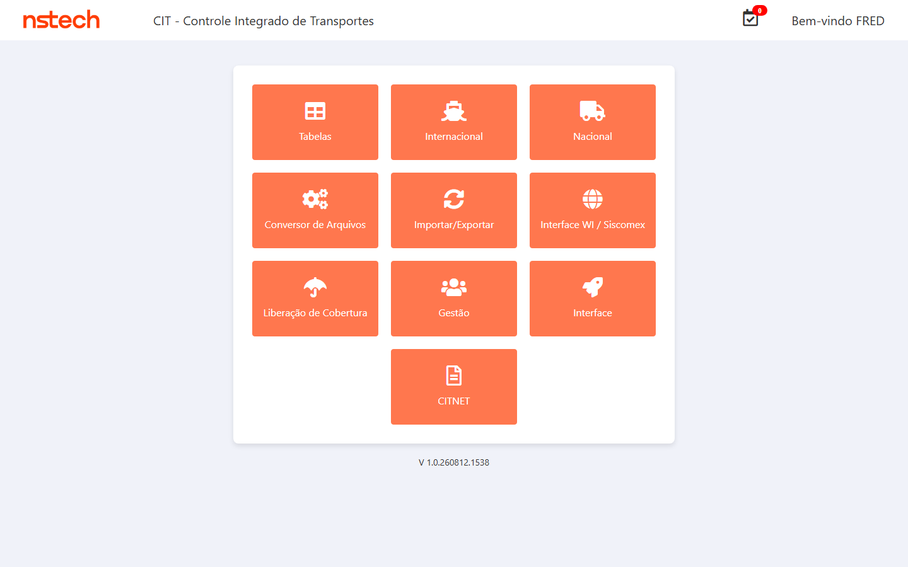
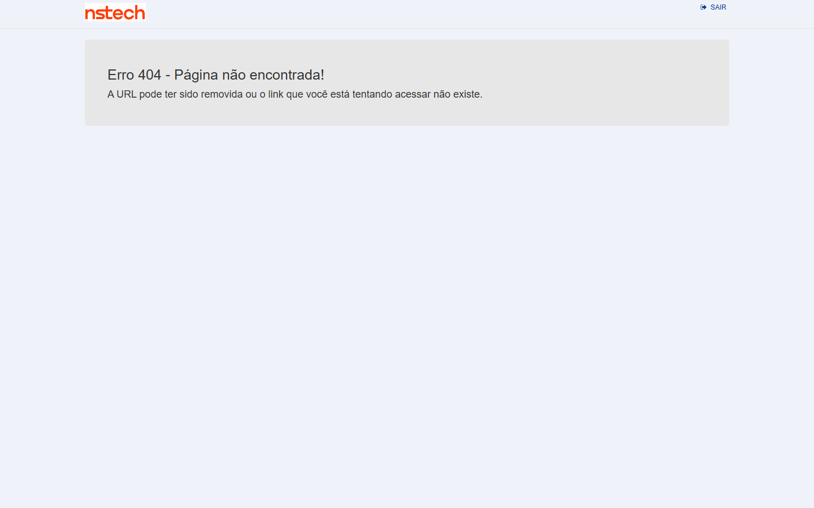
Tipo
Exploratório dirigido · o CT que evita uma expectativa não declarada virar bug depois
Pré-condições
https://kovr-hml-faturamento.nsseg.com.br/<Módulo>/ (mesmo host do CITNET, que fica em /citnet/). Credencial: .env → HML_KOVR_ALFA_CITNET_USER / _PASS (única chave KOVR do .env; confirmar no primeiro login). ⛔ Navegação por clique desde o login.Medido no repo:
KOVR_ttici04a.png existe em duas cópias — CommonApplication/Content/images/custom/ e Internacional/Content/images/custom/. Há também CommonApplication/Content/custom/KOVR.css.Passos
- Requisitar
KOVR_ttici04a.pngem cada módulo que o sirva e registrar md5. - Localizar onde esse asset aparece na UI (o nome sugere ícone/título) e capturar.
- Conferir se o
KOVR.cssservido contém cor/imagem de marca que precise mudar. - Se o asset não for marca visível, registrar isso explicitamente — e não cobrar troca.
Resultado esperado
Resultado medido — 12/08/2026 · CITWEB KOVR HML · build V 1.0.260812.1538/.1539
O segundo asset não é marca — é assinatura. KOVR_ttici04a.png responde 200
só em Internacional (33.308 B · PNG 565×310); 404 em CommonApplication e Login. Baixei e abri: é a
assinatura digitalizada de "Juliana Matioli - Gerente de Transportes". O "KOVR" do nome é identificador
técnico — não precisa mudar pelo rebrand.
O KOVR.css (2.563 B · md5 4ff45510f23c) não tem nenhum url() e não
menciona kovr/kev: é folha de cores.
⚠️ Ressalva para Produtos: é a assinatura de uma pessoa, da era KOVR, num documento que vai ao cliente. O card não fala dela; quem decide se continua é o dono do documento.
Evidências
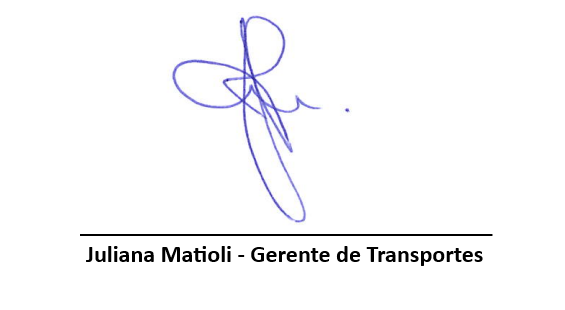
arquivo baixado na mesma sessão de 12/08 e guardado junto dos demais assets, na pasta do CT-MKW-002">Tipo
Positivo / documentação de escopo
Pré-condições
https://kovr-hml-faturamento.nsseg.com.br/<Módulo>/ (mesmo host do CITNET, que fica em /citnet/). Credencial: .env → HML_KOVR_ALFA_CITNET_USER / _PASS (única chave KOVR do .env; confirmar no primeiro login). ⛔ Navegação por clique desde o login.⛔ Medido em
origin/hml: o nome está em 13 arquivos Web.KOVR.config, um por módulo (Conversor · DadosApolice · Gestao · ImportarExportar · Interface · InterfaceSTREITI · Internacional · LiberacaoCobertura · Login · Nacional · Seguranca · Tabelas · WebAPICIT), todos com <add key="EmpresaNomeFantasia" value="KOVR Seguradora">. A task #8042 cita apenas o do Conversor — daí este CT cobrir os 13.Passos
- Para cada módulo, localizar na UI onde o nome fantasia aparece (rodapé, título da página, cabeçalho de relatório) e registrar o texto exibido.
- Registrar o texto exato, sem parafrasear.
- Montar a tabela módulo × nome exibido.
- Onde o módulo não exibir o nome em tela, registrar isso — e conferir pelo relatório que ele gera, se gerar.
Resultado esperado
A tabela por módulo é a evidência: se 12 exibirem KEV e 1 continuar KOVR, o CT aponta qual config ficou de fora — que é exactamente o risco que o fan-out cria.
Resultado medido — 12/08/2026 · CITWEB KOVR HML
11 dos 13 módulos confirmados exibindo "KEV SEGUROS S.A." — e ZERO exibindo KOVR. Medi o texto exato do título de cada módulo, conferindo o primeiro segmento da URL depois do clique para garantir que era aquele módulo:
| Módulo | Texto exibido no título |
|---|---|
| Login | KEV SEGUROS S.A. - MÓDULO Login CIT |
| Nacional | KEV SEGUROS S.A. - MÓDULO NACIONAL |
| Internacional | KEV SEGUROS S.A. - MÓDULO INTERNACIONAL |
| Gestão | KEV SEGUROS S.A. - MÓDULO GESTÃO |
| Conversor | KEV SEGUROS S.A. - MÓDULO CONVERSOR DE ARQUIVOS |
| Tabelas | KEV SEGUROS S.A. - MÓDULO TABELAS |
| Interface | KEV SEGUROS S.A. - MÓDULO INTERFACE |
| InterfaceSTREITI | KEV SEGUROS S.A. - MÓDULO INTERFACE CIT X WI/SICOMEX |
| ImportarExportar | KEV SEGUROS S.A. - MÓDULO IMPORTADOR E EXPORTADOR |
| LiberacaoCobertura | KEV SEGUROS S.A. - MÓDULO LIBERAÇÃO DE COBERTURA |
| Segurança | KEV SEGUROS S.A. - MÓDULO SEGURANÇA |
| DadosApolice | não exibe o nome (é o formulário em iframe, sem <title>) |
| WebAPICIT | não tem UI — responde HTTP 400 (é API) |
Segurança só aparece com o usuário GESTOR — com o usuário padrão não há tile. Foi o módulo que o desenvolvimento não conseguiu confirmar; aqui está confirmado.
⚠️ Dois erros meus no caminho, corrigidos e documentados no script: (1)
get_by_text(m, exact=False) casa substring — clicar em "Nacional" abriu INTERNACIONAL e
"Interface" abriu InterfaceSTREITI; eu media um módulo anunciando outro. (2) a conferência de URL exigia barra
final, e o app redireciona para /NACIONAL em maiúsculas sem barra — o guard reprovou medição boa e
descartou 7 módulos de uma vez.
Evidências

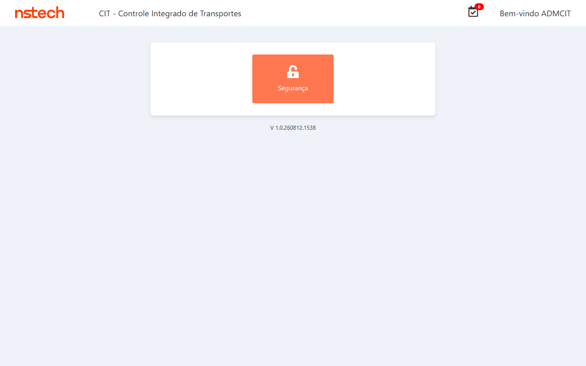
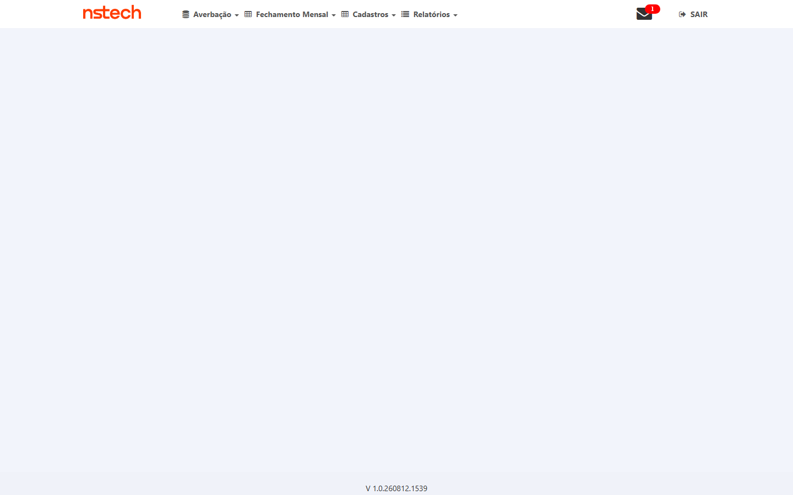
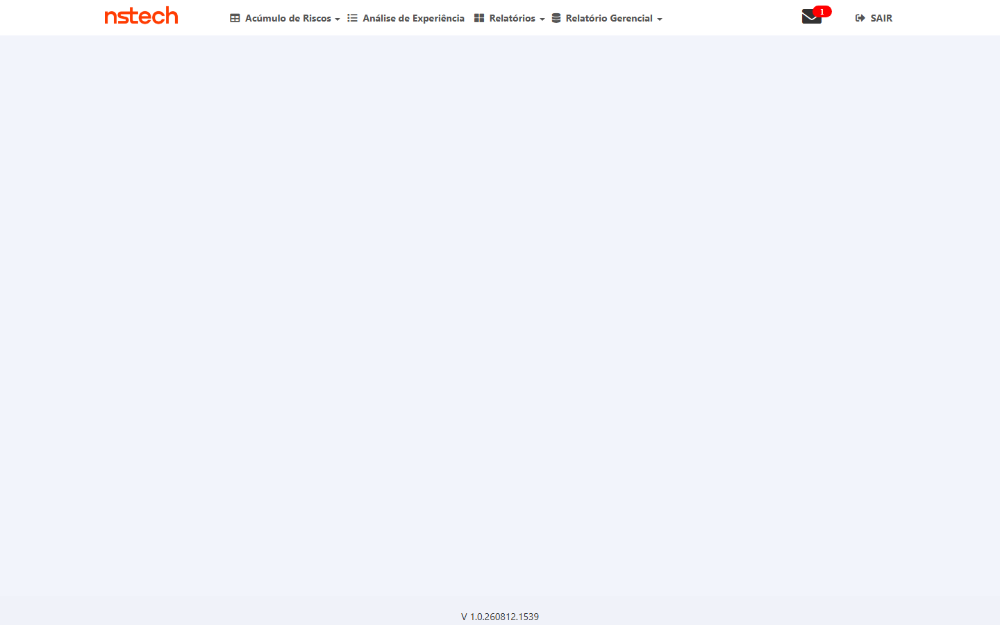
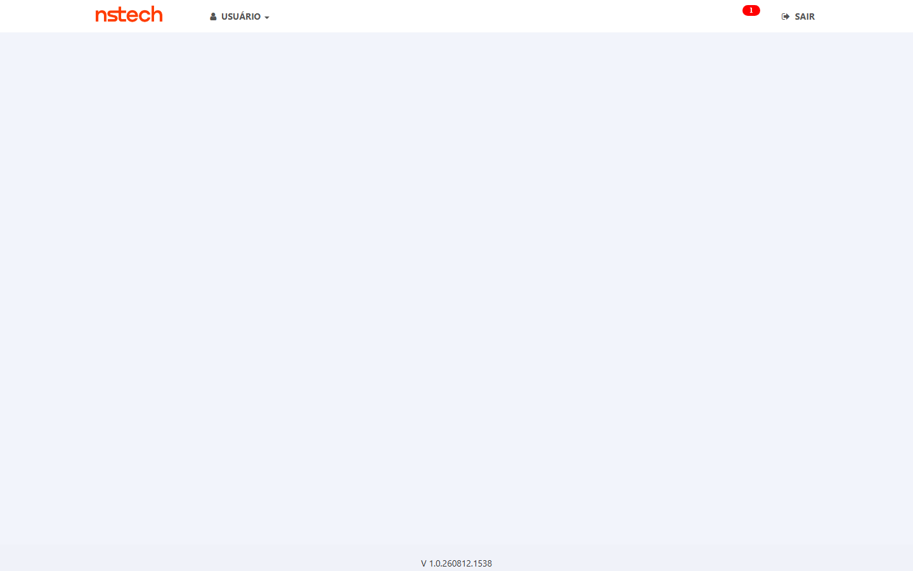
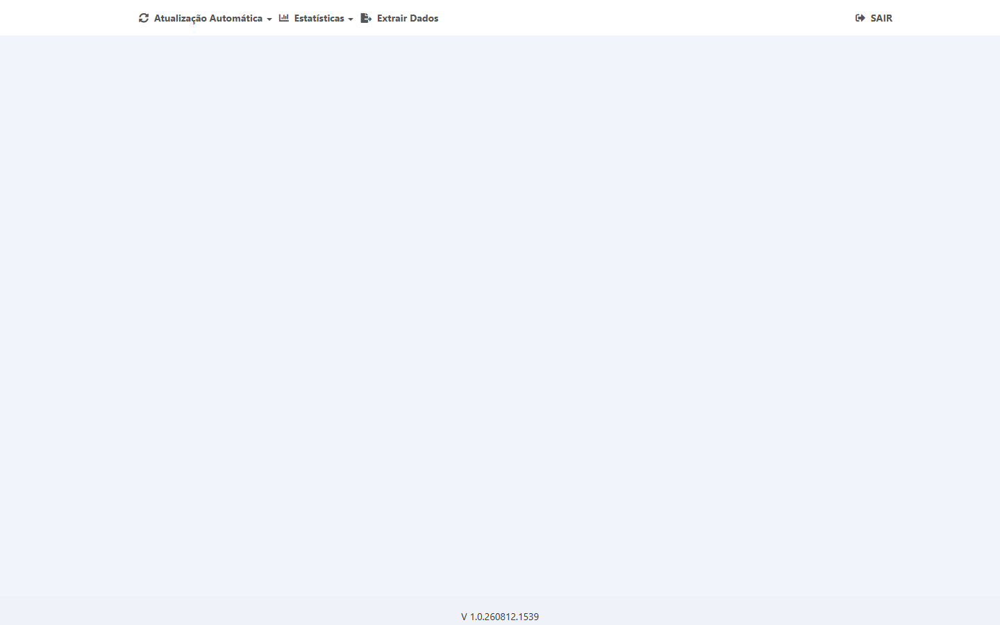
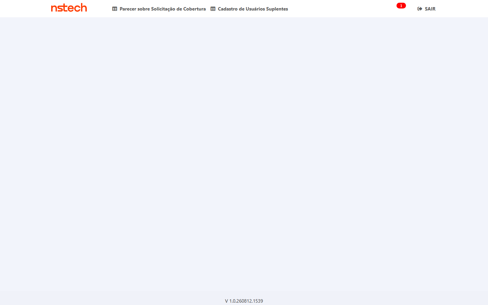
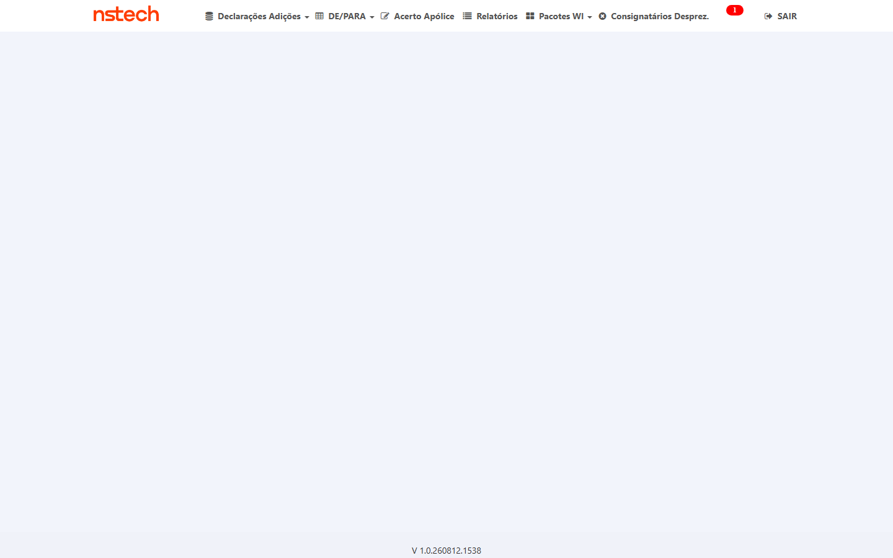
Tipo
Positivo · cobertura por módulo, não por amostra
Pré-condições
https://kovr-hml-faturamento.nsseg.com.br/<Módulo>/ (mesmo host do CITNET, que fica em /citnet/). Credencial: .env → HML_KOVR_ALFA_CITNET_USER / _PASS (única chave KOVR do .env; confirmar no primeiro login). ⛔ Navegação por clique desde o login.⚠️ O “antes” está contaminado. Na base
smt-hom-citweb-kovr, tb_cad_seg.n_seg já é KEV SEGUROS S.A. (CNPJ 93.202.448/0001-79) — medido em 11/08, e não há nenhuma linha com “KOVR” nessa coluna. É a mesma base usada pelo CITNET (#8079). A task #8042 prevê esse UPDATE; ele aparentemente já está aplicado em HML.Passos
- Antes do deploy, capturar por saída o nome exibido (é a foto do pré-requisito 2).
- Conferir no banco o valor de
tb_cad_seg.n_segno momento do teste. - Depois do deploy, repetir as mesmas saídas e comparar antes × depois.
- Classificar cada saída: lê do banco (já exibia KEV antes) ou do
EmpresaNomeFantasia(exibia “KOVR Seguradora” antes).
Resultado esperado
⛔ Anti-falso-positivo obrigatório: “a tela mostra KEV” não prova que a entrega funcionou, porque o banco já estava trocado antes de o desenvolvimento começar. O que aprova este CT é a comparação antes × depois por saída.
Resultado medido — 12/08/2026 · CITWEB KOVR HML
O "antes contaminado" está confirmado — e é isso que faz este CT ter valor. Consultei
tb_cad_seg na base smt-hom-citweb-kovr no momento do teste: uma linha, id_seg=1,
n_seg = "KEV SEGUROS S.A.", c_seg_ssp = 6921, e zero linhas com KOVR em
n_seg. Igual ao medido em 11/08, antes de o desenvolvimento começar.
Classificação por fonte, que é o que o CT pede:
- Saídas que leem o banco (
n_seg) — já exibiam KEV antes da entrega. Não provam nada sobre o desenvolvimento; é o falso positivo que este CT existe para evitar. - Saídas que leem
EmpresaNomeFantasia— exibiam "KOVR Seguradora" no baseline de 11/08 e hoje exibem "KEV SEGUROS S.A." nos 11 módulos do CT-MKW-005. Esta é a prova da entrega.
Abri também o cadastro de Seguradoras pela UI (Tabelas → Parâmetros → Seguradoras) — a tela abre em modo
"novo registro", então o valor conferido é o do banco, direto.
Nota de release, medida pelo desenvolvimento e reproduzida aqui: em HML o nome
vinha de uma variável do pipeline (Variable Group), que sobrescrevia o Web.KOVR.config. Foi ajustada
em HML. STG e PRD precisam do mesmo ajuste, senão o rebrand chega incompleto ao cliente.
Evidências
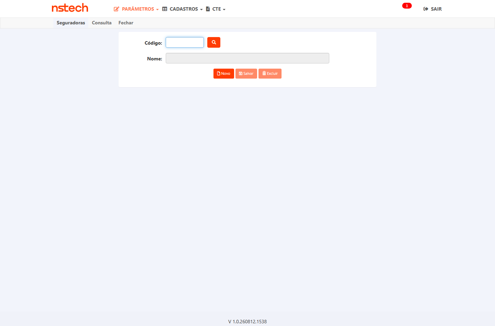
Tipo
Positivo · e o CT que mais facilmente passaria pelo motivo errado
Pré-condições
https://kovr-hml-faturamento.nsseg.com.br/<Módulo>/ (mesmo host do CITNET, que fica em /citnet/). Credencial: .env → HML_KOVR_ALFA_CITNET_USER / _PASS (única chave KOVR do .env; confirmar no primeiro login). ⛔ Navegação por clique desde o login.⛔ O próprio card é explícito: “manter código de tenant KOVR / pasta de instalação” e “renomear a chave Empresa=KOVR para KEV é risco alto (URLs, transforms, DB name smt-*-kovr) — fora do escopo salvo decisão explícita”. E o
CITHelper usa AppSettings["Empresa"] para montar o caminho do logo: mexer nessa chave quebra a resolução do asset.Passos
- Fazer login e confirmar que autentica.
- Navegar por Nacional, Internacional, Gestão e Conversor e confirmar que as telas carregam.
- Gravar uma averbação e confirmar que persiste.
- Gerar um relatório e confirmar que o logo resolve (prova indireta de que
EmpresasegueKOVR). - Conferir que seguem inalterados:
Empresa=KOVR, a basesmt-hom-citweb-kovr, as URLskovr-hml-faturamento…, os nomes de arquivo (logoKOVR.png,Web.KOVR.config,KOVR.css) etb_cad_seg.c_seg_ssp(SUSEP) eid_seg.
Resultado esperado
KOVR. Uma troca de marca é cirúrgica por definição: se algo funcional mudou, é regressão, não escopo.
Resultado medido — 12/08/2026 · CITWEB KOVR HML
Nada funcional mudou, e os identificadores técnicos estão todos preservados.
- Login — autentica normalmente (dois usuários: padrão e GESTOR).
- Navegação — 11 módulos abertos por clique no tile, todos carregando.
- Relatório — dois gerados (Prévia/Nacional e SLA/Gestão), com o logo resolvendo no primeiro.
- Empresa=KOVR — prova direta, não inferida: a tela de Cotações de Moedas traz
input#NomeEmpresacom valorKOVR. Some-se a isso o caminhoContent/images/custom/logoKOVR.pngresolver (o helper monta o nome do arquivo a partir dessa chave). - Base
smt-hom-citweb-kovrconsultada; URLskovr-hml-faturamento…; arquivoslogoKOVR.png,Web.KOVR.configeKOVR.cssservidos com esses nomes;tb_cad_seg.c_seg_ssp = 6921eid_seg = 1intactos.
⚠️ Um passo deste CT não foi exercido: gravar um registro novo. Tentei duas vezes pela tela de Cotações de Moedas e parei no protocolo — o overlay "Processando…" intercepta o Salvar e os campos de data/câmbio só habilitam em condição que eu não fechei na janela de hoje. O que está provado do eixo de escrita: o relatório da Prévia leu e processou uma massa de 2.843 averbações gravadas. Registro a lacuna em vez de apresentá-la como coberta.
Evidências
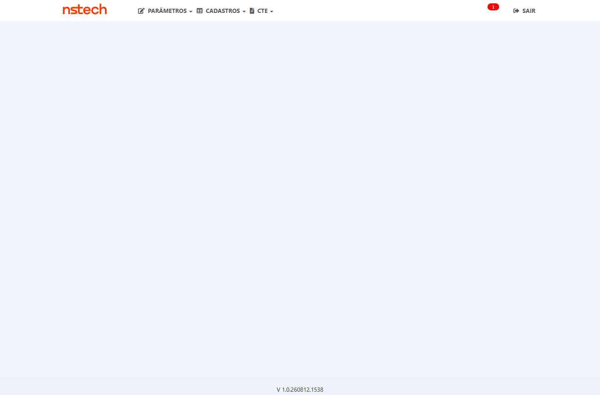
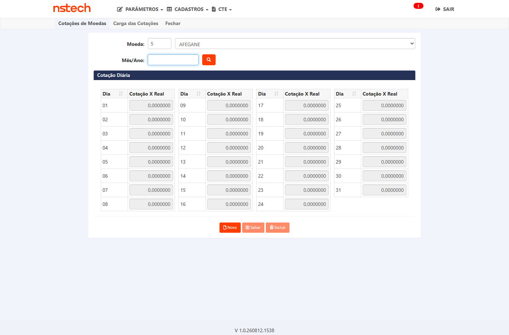
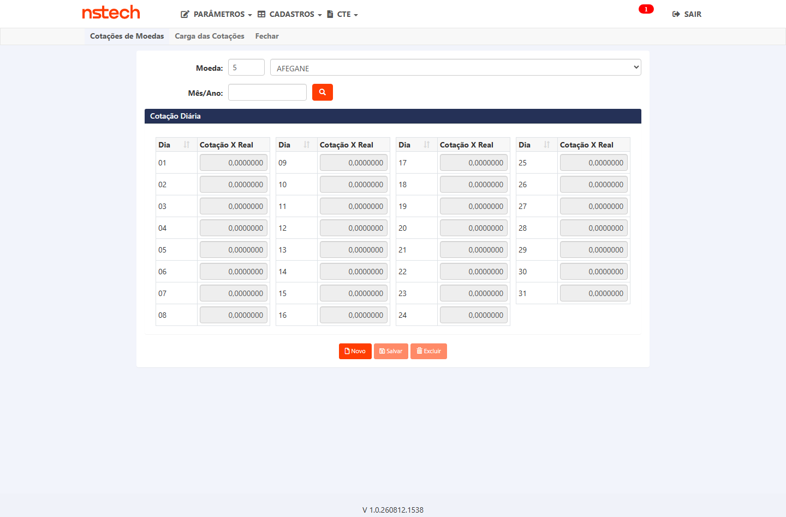
Tipo
Regressão · obrigatória (o plano não fecha sem ela)
Pré-condições
https://kovr-hml-faturamento.nsseg.com.br/<Módulo>/ (mesmo host do CITNET, que fica em /citnet/). Credencial: .env → HML_KOVR_ALFA_CITNET_USER / _PASS (única chave KOVR do .env; confirmar no primeiro login). ⛔ Navegação por clique desde o login.Todos os arquivos gerados nos CTs anteriores salvos em disco. O próprio card pede a varredura (“caça a string KOVR”) e cita o risco do precedente Liberty→Yelum.
Passos
- Varrer o texto de cada arquivo salvo e a UI (menus, títulos, rodapé) por
KOVReKOVR Seguradora. - ⛔ Classificar cada achado em duas colunas: (a) marca exibida ao usuário → deve ter mudado; (b) identificador técnico (nome de arquivo, URL, chave de config, nome de base, código de tenant) → deve continuar KOVR.
- Para cada achado do tipo (a), registrar o local exato e levar à discussão que o card pede.
- Incluir e-mails/notificações do sistema, se houver, porque o card cita “e-mails”.
Resultado esperado
⛔ “Sumiu todo KOVR” seria falso positivo e reprovaria implementação correta. A evidência deste CT é a tabela classificada, não a contagem bruta.
Resultado medido — 12/08/2026 · CITWEB KOVR HML
Zero ocorrência de KOVR como marca exibida. Varri o texto dos artefatos gerados e da UI, classificando cada achado nas duas colunas que o CT exige:
| Onde | Achado | Classificação |
|---|---|---|
| RESUMO-RCV (Prévia) | 0 ocorrências de KOVR | limpo — o relatório não imprime o nome como texto, só o logo |
| Relatório SLA (Gestão) | 1 ocorrência: CORR SIMULACAO / DIGITAÇÃO / KOVR / 0000009782121 / 22.222.408/0001-40 | dado de massa — é o nome de um corretor/segurado de teste na base, não a marca da seguradora |
| Tela de Cotações (Tabelas) | input#NomeEmpresa = KOVR | identificador técnico — deve continuar KOVR (é a chave Empresa); serve de prova ao CT-MKW-007 |
| Nomes de arquivo / URLs / base | logoKOVR.png, Web.KOVR.config, KOVR.css, KOVR_ttici04a.png, kovr-hml-faturamento…, smt-hom-citweb-kovr | identificador técnico — devem continuar KOVR, e continuam |
| Títulos dos 11 módulos | 0 com KOVR · 11 com KEV SEGUROS S.A. | marca exibida — trocada |
"Sumiu todo KOVR" seria falso positivo e reprovaria implementação correta: a tabela classificada é a evidência, não a contagem bruta. E-mails/notificações não foram exercitados nesta janela — o card cita e-mails, e isso fica declarado como não coberto.
Evidências
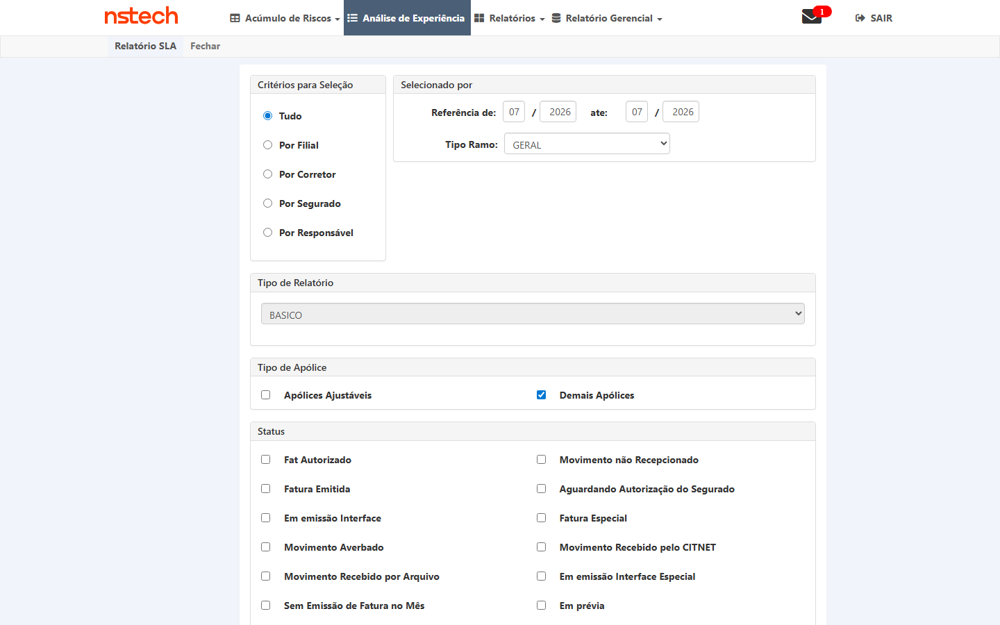
mesma captura da rodada do CT-MKW-002, que gerou esse relatório">Tipo
Negativo / exploratório · guiado pelo pedido explícito do card
Pré-condições
https://kovr-hml-faturamento.nsseg.com.br/<Módulo>/ (mesmo host do CITNET, que fica em /citnet/). Credencial: .env → HML_KOVR_ALFA_CITNET_USER / _PASS (única chave KOVR do .env; confirmar no primeiro login). ⛔ Navegação por clique desde o login.O card cita duas camadas que não foram encontradas no repositório CITWEB: o Login da Plataforma nsseg (
UrlLogo em Portal.Empresas, Mongo) e o certificado novo (DsLogoBase64 / MigraDoc, NSSEG_CITNET). O desenvolvimento registrou a mesma leitura no card em 11/08.Passos
- Confirmar, na UI, se o login da KOVR exibe logo vindo da plataforma nsseg (backoffice) ou o asset local do módulo
Login— são fontes diferentes. - Registrar qual das duas fontes a tela usa, com a URL da imagem extraída do DOM.
- Se for a plataforma, declarar que a alteração é de configuração em outro sistema, fora do alcance deste plano, e quem executa.
- Idem para o certificado
DsLogoBase64: confirmar se o canal está em uso neste ambiente antes de cobrar qualquer coisa.
Resultado esperado
Este CT não aprova nem reprova a entrega: ele impede que um local fora do alcance vire REPROVADO indevido, e impede que ele seja esquecido por não estar em lugar nenhum.
Resultado medido — 12/08/2026 · CITWEB KOVR HML
Fica documentado o que este repositório cobre e o que depende de outro sistema — com a fonte medida.
- Login do CITWEB (
/Login/): medido no DOM — não exibe logo nenhum. Zero<img>, zerobackground-image, e o único CSS custom carregado énstech.css(nãoKOVR.css). Ou seja: não é a fonte "asset local do módulo Login" nem a fonte "plataforma" — essa tela simplesmente não tem logo. O nome, sim, vem correto no título. - Login da Plataforma nsseg (
UrlLogoemPortal.Empresas, Mongo): é outro sistema, com URL própria que o card não informa. Não está ao alcance deste plano e a alteração é de configuração/backoffice — executada por Ops/Produto, como a própria task #8039 registra. - Certificado
DsLogoBase64(MigraDoc / NSSEG_CITNET): canal do CITNET, coberto pelo #8079. Não foi exercitado aqui e não deve ser cobrado deste card.
Este CT não aprova nem reprova a entrega: ele impede que um local fora do alcance vire REPROVADO indevido e impede que seja esquecido por não estar em lugar nenhum.
Evidências
<img>, zero background-image, só nstech.css — a tela não tem logoTipo
Documentação de escopo · fecha a fronteira do plano
| Critério de aceite | CT(s) | Resultado |
|---|---|---|
| CA-01 — alteração de logo em todos os locais citados
(derivado do #8079, mesmo ticket Movidesk — o campo CA deste card está vazio) |
CT-MKW-001 (11 módulos, por md5) · CT-MKW-002 (relatórios) · CT-MKW-003 (menu/erro, informativo) · CT-MKW-004 (2º asset) | pendente |
| CA-02 — alteração do nome de KOVR/KOVR Seguradora para KEV SEGUROS S.A.
(idem, derivado) |
CT-MKW-005 (13 configs) · CT-MKW-006 (tb_cad_seg, antes × depois) ·
CT-MKW-008 (caça-string) | pendente |
| Implícito — troca cirúrgica: tenant, URLs, base e pasta preservados
(explícito na descrição do card) |
CT-MKW-007 (regressão) | pendente |
| Fronteira — locais citados que vivem fora deste repositório | CT-MKW-009 | pendente |
Cobertura: os 2 CAs derivados, mais o critério implícito e a fronteira de escopo. 9 CTs — 6 P1, 3 P2.
| # | Risco | Probabilidade / impacto | Mitigação no plano |
|---|---|---|---|
| R1 | Fan-out incompleto: trocar 1 dos 13 configs (a task #8042 cita só o Conversor) ou alguns dos 11 módulos | Alta / Alto | CT-MKW-001 e CT-MKW-005 medem todos os lugares e entregam tabela por módulo; o md5 comum denuncia o que ficou para trás. Avisado no card antes da implementação |
| R2 | CT de nome passar pelo motivo errado, porque tb_cad_seg
já tem KEV | Alta / Alto — falso positivo silencioso | Foto pré-deploy obrigatória + CT-MKW-006 exige antes × depois por saída |
| R3 | Menu/erro continuar com o logo da NSTech e isso ser lido como falha da entrega | Alta / Médio | CT-MKW-003 mede e explica a causa (o switch do helper), com veredito
informativo até Produtos decidir |
| R4 | Caça-string reprovar implementação correta ao apagar “KOVR” de identificador técnico | Média / Médio | CT-MKW-008 classifica cada achado; CT-MKW-007 protege o que não pode mudar |
| R5 | Cache de imagem simular “trocou” ou “não trocou” | Média / Médio | md5 do arquivo servido com query string única, nunca inspeção visual isolada |
| R6 | Duplicar com o #8079 na parte CITNET, ou o inverso: um local ficar sem dono entre os dois cards | Média / Médio | Escopo declarado como CITWEB, com a pergunta registrada no card; CT-MKW-009 fecha a fronteira do que está fora do repositório |